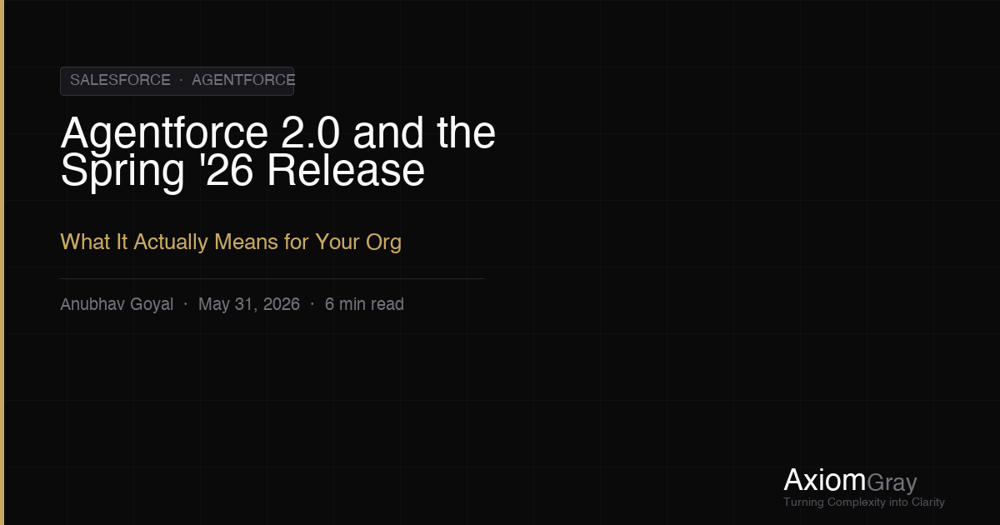

Every Salesforce release cycle brings a new wave of features, and most organizations absorb them the same way: a few admins run through the release notes, sandbox testing happens in a sprint, and the changes roll out quietly. Spring '26 is different. With Agentforce 2.0 at its core, this release isn't a feature drop — it's a platform repositioning that will reshape how enterprise Salesforce orgs are designed, governed, and operated.
Having worked through Salesforce platform transformations across multiple industries, I can say this clearly: the organizations that thrive in the next two years will not be the ones that adopt Agentforce the fastest. They will be the ones that built the right foundation before flipping the switch.
What Agentforce 2.0 Actually Delivers
The Spring '26 release formalizes capabilities that were in beta throughout late 2025 and introduces genuinely new surface area that architects need to understand immediately.
Multi-Agent Orchestration: Agentforce 2.0 introduces native support for agent-to-agent handoffs. A triage agent can now route work to a specialized resolution agent, which can escalate to a human via a human-in-the-loop agent — all within a single, declaratively defined workflow. This sounds elegant on a slide deck. In practice, it means your flow governance problem just became an agent governance problem.
Agentforce Studio as the New Builder: Agent Builder has been replaced and significantly expanded by Agentforce Studio, a unified environment for defining agent topics, actions, instructions, and guardrails. The abstraction level is higher, but the blast radius of a misconfigured agent action is also much higher. A Flow that misfires affects a single record. An agent action that misfires can affect thousands of interactions before anyone notices.
Data Cloud as the Nervous System: The Spring '26 release deepens the integration between Agentforce and Data Cloud in a way that is no longer optional for orgs pursuing real-time personalization or service deflection. Agents can now query Data Cloud calculated insights in near real-time, which means the quality of your unified data model directly determines the quality of your AI decisions.

The Three Readiness Gaps Most Orgs Haven't Solved
Across the organizations I advise, I see the same gaps appearing at the threshold of Agentforce adoption. None of them are technical. All of them are architectural.
Gap 1 — Fragmented Data Models: Agentforce agents reason against your CRM data. If your Account, Contact, and Case objects are cluttered with legacy fields, duplicate picklist values, and inconsistent naming conventions accumulated over years of iterative delivery, the agent will produce inconsistent, unreliable outputs. Garbage in, garbage out — but now at conversational scale.
Gap 2 — No Declarative Logic Governance: Agentforce actions invoke Flows and Apex. If your org has no clear trigger framework, no Flow naming conventions, and no documented execution order — the same structural chaos I described in my earlier piece on the Salesforce Governance Gap — then Agentforce will amplify that chaos rather than resolve it. Agents don't fix bad architecture; they expose it faster.
Gap 3 — Missing Observability: How will you know when an agent gives a wrong answer? How will you detect drift in agent performance over weeks? Spring '26 ships with improved agent interaction logging, but the organizations that are truly ready have already defined their quality metrics and built monitoring workflows before go-live — not after.
What to Do Before You Enable Agentforce 2.0
The temptation is to enable Agentforce in a sandbox, wire up a sample topic, and show leadership a demo within a sprint. That demo will look impressive. The production deployment six months later will not, unless you have done the foundational work first.
- Run a metadata health assessment across your top five most-used objects. Identify redundant fields, inactive validation rules, and conflicting Flows before you add AI reasoning on top of them.
- Define your agent governance model now — who owns topic definitions, who reviews action configurations, and what is the approval process for production changes to an agent's instructions?
- Map your Data Cloud schema against the decisions your agents will need to make. If the data to support a use case doesn't exist in a unified, accessible form, the agent cannot deliver it reliably.
- Establish a baseline for agent interaction quality before launch. Define what "good" looks like for containment rate, escalation rate, and customer satisfaction — so you have something to measure against from day one.
The Bigger Picture
Salesforce is making a decisive bet that the future of enterprise software is not applications that people use, but agents that work on people's behalf. Agentforce 2.0 and the Spring '26 release are the clearest signal yet that this shift is not coming — it is here.
The organizations that will lead in this environment are the ones that understand a fundamental truth: AI doesn't transform your business. Your business transforms your AI potential. The platform you have built, the data you have governed, and the architecture you have enforced over the last five years will determine how much value you can extract from the most capable AI platform in the enterprise CRM market.
The Spring '26 release is a gift to every organization that did the boring, unglamorous work of building a clean, well-governed Salesforce platform. For everyone else, it is a pressure test.